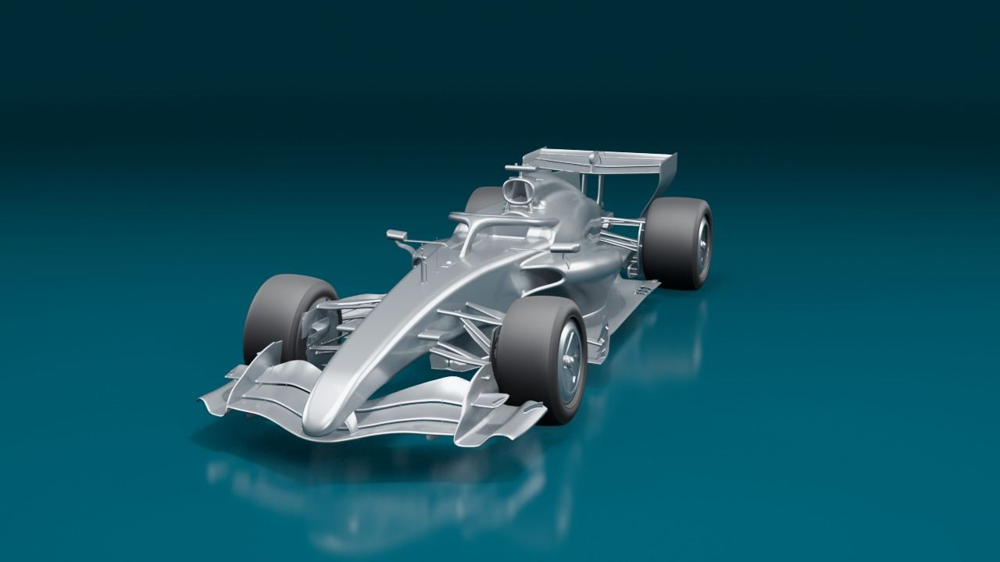

Formula 1 2026 – a full car designed from scratch in CATIA
A complete car at scale 1:1 within the 2026 FIA technical regulations. I deliberately avoided approximation-based workflows: no B-Rep, no imported geometry, only stable and robust GSD+ features organized with the modular design approach. Every circuit then gets its own aero package, validated in SIMULIA.

360° view

⟲ Drag to rotateDrag or swipe to turn the car – 72 pre-rendered views of the CATIA model.
Method
- Regulation first: the FIA 2026 reference volumes are modeled before any surface and act as the skeleton of the car.
- Modular architecture: each sub-system is a module with published inputs and outputs, so any part can evolve without breaking the car.
- Precise surfacing only: 60,000+ GSD+ features following best practices, no approximated geometry: longer to build, but every surface stays editable.
- Simulation loop: each package is checked in SIMULIA before it is frozen.
Regulations and reference volumes
The project starts from the 2026 technical regulations, not from a sketch. The reference volumes (RV) that bound the bodywork, wheels and wings are modeled first, at scale 1:1. Every module then reads its limits from these volumes, so the car stays legal by construction.

Survival cell, nose, engine cover and floor
The main body is surfaced inside the volumes: nose, survival cell, sidepods, engine cover and floor. Patches are split along clean boundaries and kept curvature-continuous, so the reflections stay smooth and the flow stays attached.

Front and rear ends
Suspension, wheels and the multi-element front wing close the front of the car; the rear wing, beam wing and diffuser close the back. The rear wing carries the straight-line mode actuator required by the 2026 active-aero rules.


Complete car and first validation
The assembled car is checked against its volumes, then rendered for the first time. A first virtual wind tunnel run on the neutral car confirms that the flow follows the bodywork before any circuit-specific work starts.


Monaco: monkey seats instead of active aero
Monaco has no active-aero zone, so the straight-line mode actuator is useless there. I removed it and used its regulatory volume (the rear-wing actuator fairing box) to fit monkey-seat winglets. SIMULIA shows high pressure on their upper surface and a suction zone below: the flow is pushed upward, so the car is pushed down (Newton's third law). The geometry was converged over several flow simulations.


Full-car virtual wind tunnel
The complete Monaco-spec car goes through a full-car CFD campaign in the virtual wind tunnel. The fluid domain is meshed first, refined around the car and coarser toward the tunnel walls. Streamlines around the front tyre, sidepod and floor edge then show where the tyre wake interacts with the floor, and drive the next upgrades.


Mexico: four upgrades for thin air
Mexico City sits at 2,240 m: the air is about 20 % thinner, so every wing produces less downforce and the cooling is weaker. Four upgrades target the airflow over the whole car, each checked with full-car CFD, and the car gets a Día de Muertos livery.


Shared on LinkedIn as the series “Engineering behind F1”.